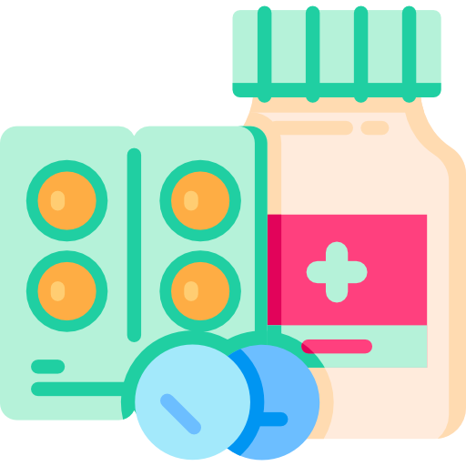
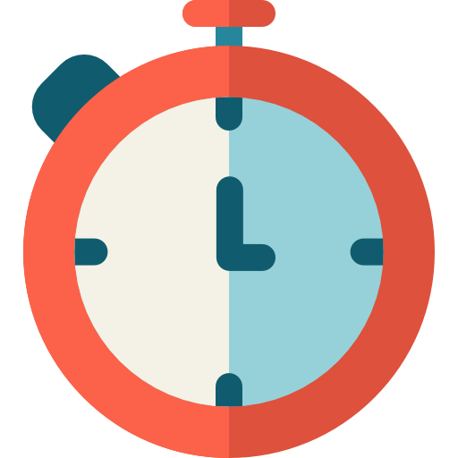

Мобільна медична допомога вдома
Професійні крапельниці та уколи вдома. Виїзд медсестри — від 600 грн. Комплексний підхід: виведення із запою, очищення організму, відновлення після отруєнь (від 2900 грн). Швидко, анонімно, безпечно.
Крапельниці

30 хвилин
показників
очищення
безпечно
Професійні крапельниці вдома для вашого здоров'я та гарного самопочуття . Ми пропонуємо комплексний підхід: виведення із запою, очищення організму (детокс), відновлення після харчових отруєнь, покращення стану шкіри та зміцнення імунітету. Швидко, анонімно, безпечно.
Наші переваги

Ви нічого не купуєте, ліки та витратні матеріали ми беремо на себе

Виїзд у день дзвінка, або у зручний для вас час
Їдемо з аптечкою невідкладної допомоги
Медичні послуги вдома
Якщо вам необхідно поставити крапельницю вдома, зробити це можна з нашою допомогою. Ми працюємо та прилеглих населених пунктах: Овідіополь, Великодолинське, Молодіжне, Малодолинське, Санжійка, Грибівка, Кароліно-Бугаз, Барабой, Олександрівка, Маяки.
Дивитись усі програми терапіїПрограми інфузійної терапії
Наші популярні комплекси та крапельниці вдома
| Натрію хлорид 0,9% | 200 мл |
| Магнію сульфат | 5 мл |
| Мексідол | 2 мл |
| Вітамін В1 | 2 мл |
| Вітамін В6 | 2 мл |
| Мілдронат | 2–4 мл |
| Натрію хлорид 0,9% | 400 мл |
| Вітамін С (5%) | 4 мл |
| Вітамін В1 | 2 мл |
| Вітамін В6 | 2 мл |
| Мексідол | 2 мл |
| Кокарбоксилаза | 100 мг |
| Цитофлавін | 10–20 мл |
| Натрію хлорид 0,9% | 200 мл |
| Гептрал (адеметіонін) | 400 мг |
| Гепа-Мерц (орнітин) | 1 амп |
| Есенціале Н | 5–10 мл |
| Глутаргін | 5 мл |
| Вітамін С, В1, В6 | за схемою |
| Комплексна детоксикація | Очищення |
| Відновлення водного балансу | Нормалізація |
| Зняття похмільного синдрому | Полегшення |
| Підтримка печінки і серця | Захист |
| Регідратація організму | Відновлення |
| Усунення головного болю | Полегшення |
| Нормалізація тиску та пульсу | Стабілізація |
| Зняття нудоти і тремору | Комфорт |
| Глутатіон | Антиоксидант |
| Вітамін С | Колаген |
| Альфа-ліпоєва кислота | Омолодження |
| Очищення від токсинів | Сяйво |
| Усунення зневоднення | Регідратація |
| Виведення токсинів | Очищення |
| Зняття нудоти | Полегшення |
| Відновлення солей | Баланс |
| Вітамінні комплекси | Енергія |
| Антиоксиданти | Захист |
| Зміцнення організму | Тонус |
| Після застуд та вірусів | Відновлення |
| Внутрішньовенні ін'єкції | Уколи |
| Внутрішньом'язові ін'єкції | Уколи |
| Крапельниці будь-якої складності | Системи |
| Контроль тиску та пульсу | Безпека |
Про нас
MobiMedx — це компанія молодих, але досвідчених фахівців. Наші лікарі мають значний практичний досвід роботи на екстреній медичній допомозі, в реанімації та в терапевтичних відділеннях.
Ми — мультифункціональна команда із залученням різних фахівців, що дозволяє нам забезпечити комплексний підхід до кожного пацієнта. Також ми тісно співпрацюємо з косметологами для надання послуг краси та омолодження.
Наша мета — забезпечити пацієнтам комфорт та професійну медичну допомогу прямо у них вдома .

Як ми працюємо
1
Ви зв'язуєтеся з нашим оператором
2
Узгоджуємо час приїзду та обсяг терапії
3
До вас приїжджає медичний співробітник і ви отримуєте послугу

Часті запитання
Ціна — від 3800 грн. У вартість включено всі необхідні медикаменти, витратні матеріали та роботу фахівця.
Медсестра приїжджає від 30 хвилин. Полегшення стану настає вже в процесі інфузії, зазвичай через 30-40 хвилин.
Коктейль з глутатіону, вітаміну С та альфа-ліпоєвої кислоти.
Так, працюємо по всій Одеській області.
Зона обслуговування в Одеській області
Ми надаємо професійну медичну допомогу на дому в Чорноморську та найближчих населених пунктах Одеської області. Наші медсестри виїжджають для постановки крапельниці від алкоголю, виведення із запою, детоксикації організму та проведення процедури «Попелюшка» в Овідіополь, Великодолинське, Молодіжне, Малодолинське, Санжейку, Грибівку, Кароліно-Бугаз, Барабой, Олександрівку та Маяки. Цілодобово, анонімно, з виїздом у день звернення.